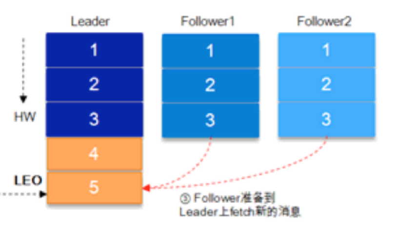
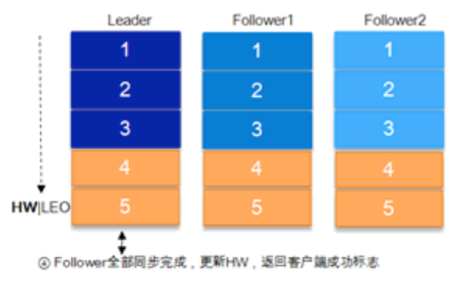
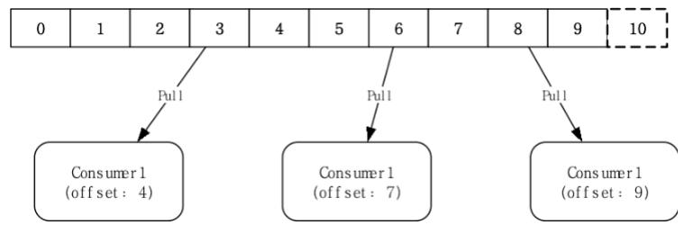
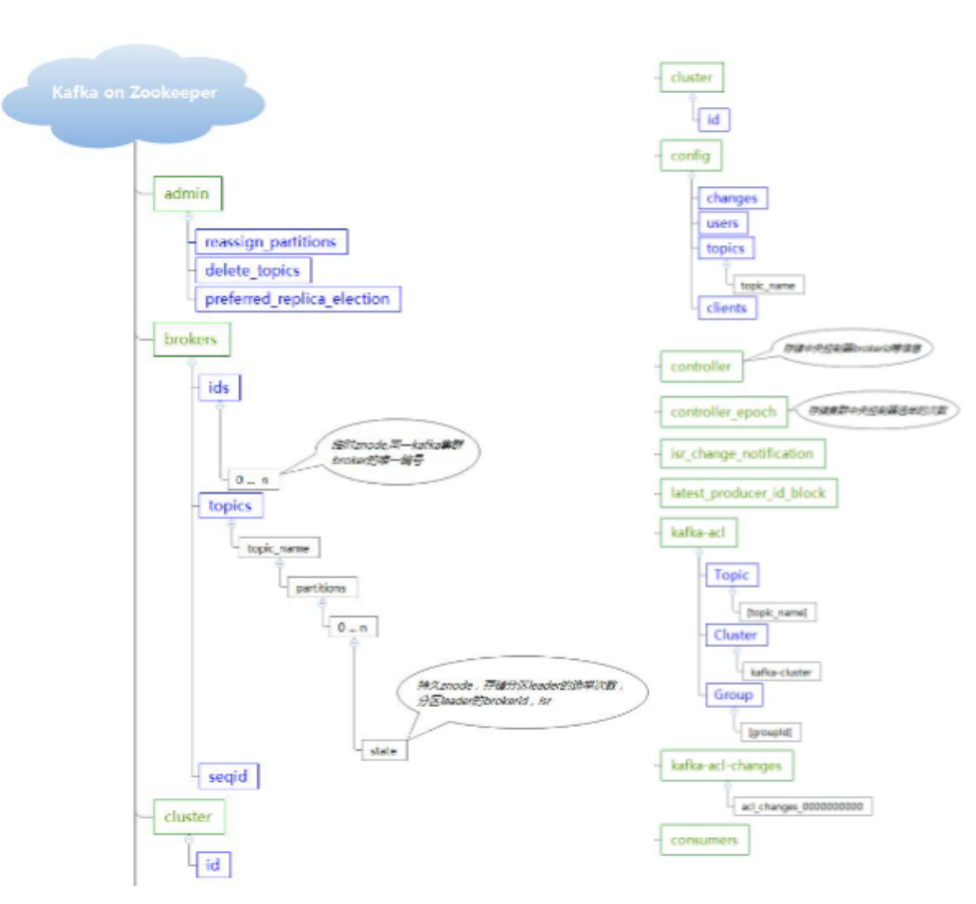
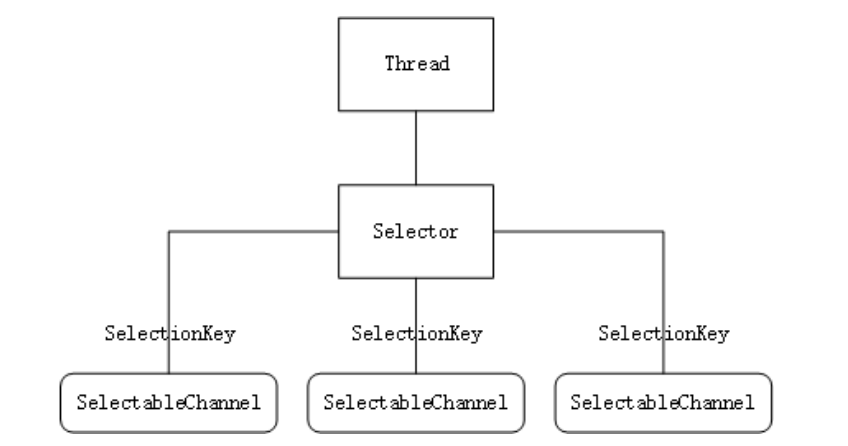
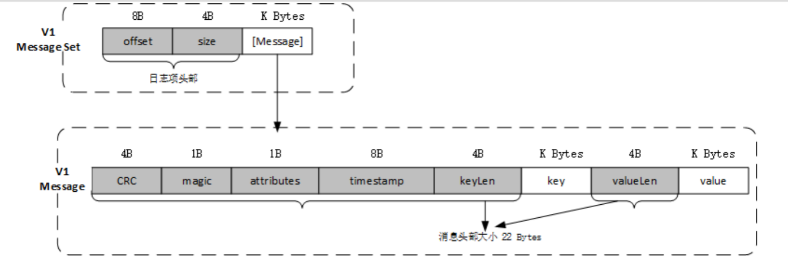
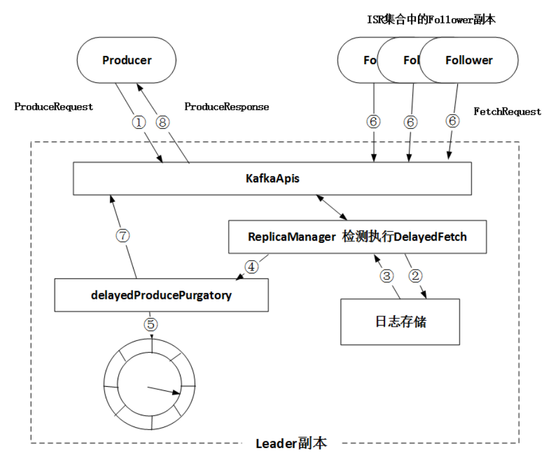
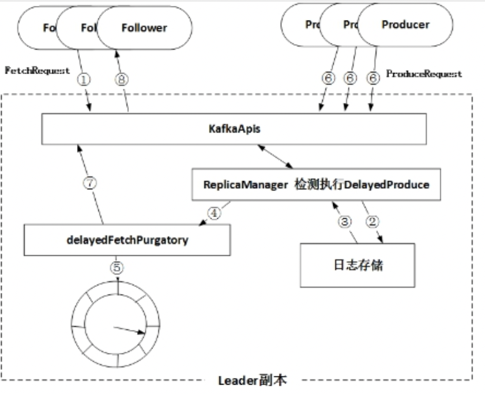

本文将全局介绍 Kafka 的整体架构。
概念

消息
消息是Kafka中最基本的数据单元。消息由一串字节构成，主要由key和value构成，key和value也都是byte数组。Topic
Topic是用于存储消息的逻辑概念，可以看作一个消息集合。每个Topic可以有多个生产者向其推送消息，也可以有多个Consumer消费其中的消息。
Partition
每个Topic可以划分为多个Partition，同一Topic下的不同分区包含的消息是不同的。每个消息在被添加到分区时，都会被分配一个offset，它是消息在此分区中的唯一编号，Kafka通过offset保证消息在分区内的顺序。
Log
分区在逻辑上对应一个Log，当生产者将消息写入分区时，实际上是写入到分区对应的Log中。Log是一个逻辑概念，可以对应到磁盘上的一个目录。Log由多个Segment组成，每个Segment对应一个日志文件和索引文件。
保留策略(Retention Policy)和日志压缩(Log Compaction)
一种是设置消息的保留时间，另一种是设置日志文件大小阈值。Kafka后台启动线程，定期将相同的key进行合并。Replica
每个Partition可以有多个副本，所有的读写请求都由选举出的Leader副本处理，其他都作为Follower副本，Follower副本仅仅是从Leader副本处把数据拉取到本地，同步更新到自己的Log中。
ISR集合
ISR集合是由Leader副本管理的， 表示的是目前可用(alive)且消息量与Leader相差不多的副本集合，是整个副本集合的一个子集。HW & LEO
HW（High Watermark）是由Leader副本管理的，HW之后的消息对消费者不可见。当ISR集合中的全部Follower副本都拉取HW指定消息进行同步之后，Leader副本递增HW的值。
LEO（Log End Offset）是所有副本都会管理的一个offset标记，指向追加到当前副本的最后一个消息的offset。

Broker
一个单独的Kafka Server就是一个Broker。Broker的主要工作就是接收生产者发送的消息，分配offset，之后保存到磁盘；同时接收消费者、其他Broker的请求，根据请求类型进行相应处理并返回响应。一般生产环境中，一个Broker独占一台物理机。Controller
Controller是Kafka集群的指挥中心，而其他Broker则听从Controller指挥实现相应地功能。Controller负责管理分区的状态、管理每个分区的副本状态、监听Zookeeper中的数据变化等工作。当Leader Controller出现故障时则重新选举新的Controller。Producer
生产者的主要工作是生产消息，并将消息按照一定的规则推送到Topic。选择分区的规则可以有多种，根据消息的key的Hash值选择分区，或按序轮询全部分区的方式，或自定义路由规则。Consumer
消费者的主要工作是从Topic拉取消息，并对消息进行消费。每个消费者消费到Partition的哪个位置（offset）的相关信息，是Consumer自己维护的。
Consumer Group
在Kafka中，多个Consumer可以组成一个Consumer Group，一个Consumer只能属于一个Consumer Group。
Broker模块功能
Kafka源码包结构：
Kafka源码组成：
LogManager
定位LogSegment：
定位index项及position：
LogManager模块实现：
此模块中的定时线程任务：
- kafka-log-retention
负责LogSegment的清理工作，一是LogSegment的存活时长log.retention.hours，二是Log的大小log.retention.bytes。
- kafka-log-flusher
定时刷写页面缓存中的日志到磁盘。log.flush.interval.messages，log.flush.interval.ms

- kafka-recovery-point-checkpoint
定时将所有数据目录的所有日志的检查点写到“recovery-point-offset-checkpoint”文件中。检查点是指日志已经刷新到磁盘的位置，用于故障恢复。
- Cleaner
activeSegment不参与。 log.clenear.enable

Clean部分表示已经被压缩过的部分，dirty部分表示未压缩的部分。“迫切程度”是通过cleanableRation(ditry部分占整个Log的比例)决定的。
ReplicaManager

KafkaController
Kafka在zookeeper上记录的信息：

- /brokers/ids/[id]:可用broker的id
- /brokers/topics/[topic]/partitions:topic的分区以及AR
- /brokers/topics/[topic]/partitions/[partition_id]/state:分区的Leader、ISR等
- /controller_epoch:Controller Leader的选举次数
- /controller:当前Controller Leader的id
- /admin/reassign_partitions:需要进行副本重新分配的分区
- /admin/preferred_replica_election:需要进行“优先副本”选举的分区
- /admin/delete_topics:待删除的Topic
- /isr_change_notification:ISR集合发生变化的分区
- /config: 配置信息
KafkaController模块实现：
GroupCoordinator
ConsumerCoordinator的实现：
GroupCoordinator的实现：
Consumer加入Consumer Group的过程：
查找GroupCoordinator

发送JoinGroupRequest

发送SyncGroupRequest

问题1：集群规模大，KafkaConsumer数量多导致频繁Rebalance
解决：0.11.0版本中添加了” group.initial.rebalance.delay.ms”配置，让GroupCoordinator推迟空消费组接收到成员加入请求后本应立即开启的rebalance。问题2：Kafka0.10.0版本的Consumer心跳和next接口在同一个线程中，如果处理时间长，会导致超时
解决：0.10.1版本中在ConsumerCoordinator中添加了单独的HeartbeatThread线程。
网络层实现
Selector
选择器Selector是SelectableChannel的多路复用器，可以同时监控多个SelectableChannel的IO状况，即利用Selector可使一个单独的线程管理多个SelectableChannel，SelectableChannel设置为非阻塞。服务端为ServerSocketChannel，客户端为SocketChannel。

通道使用register（Selector sel，int ops）方法将通道注册到选择器，第二个参数指定监听的事件类型。
SelectionKey.OP_READ (1) 读
SelectionKey.OP_WRITE (4) 写
SelectionKey.OP_CONNECT (8) 连接
SelectionKey.OP_ACCEPT (16) 接收
Selector.open() 创建一个Selector
selector.select() 阻塞等待监听的事件就绪，返回大于0说明有事件就绪
selector.selectedKeys() 获得就绪的事件，使用其iterator遍历SelectionKey，根据key判断事件类型
key.isAcceptable()、key.isReadable()，处理完移除
wakeUp() 唤醒由于调用select()方法而阻塞的线程
网络线程模型
broker端网络线程模型：

Reactor单线程模型：

- Reactor多线程模型：

- 主从Reactor多线程模型：

与Netty网络线程模型的对比：
Netty使用的是Reactor多线程模型：因为服务器端的 ServerSocketChannel 只绑定到了 bossGroup 中的一个线程, 因此在调用 Java NIO 的 Selector.select() 处理客户端的连接请求时, 实际上是在一个线程中的；而且workerGroup必须创建。
Netty服务器端需要绑定多个端口时，才会用到主从Reactor多线程模型。
Kafka网络层默认也是使用Reactor多线程模型，当”listeners”配置多个，监听不同的端口时，才用到主从Reactor多线程模型。
Kafka网络层有独立的Handler处理线程池，而Netty的业务处理是在work线程调用的Handler中完成。Kafka新老版本网络模型对比

写流程
消息格式
- V1 Message & Message Set

1 | V1的消息格式： |
- V2 Record & RecordBatch

1 | V2的消息格式： |
- 二者比较
从上面的情况来看，似乎V2占用的磁盘空间反而增加了，这是因为我们测试的时候，Producer向Kafka一次发送的batch中只包含一条消息。如果我们改用java API程序来批量发送消息的话，我们就会发现两者的不同。在未有任何调优的情况下，v2版本消息格式在一定程度上减少了网络IO和磁盘IO的开销。展示那两张性能对比图。
Producer客户端
Producer java客户端实现：
Producer客户端与broker端交互的协议格式：
请求数据从生产者发送到服务端的流转过程：
Delay机制
TimingWheel
DelayQueue本质上是封装了一个PriorityQueue。PriorityQueue内部使用最小堆来实现排序队列。最小堆在插入和获取时，时间复杂度随着DelayQueue中的元素个数呈对数级别增长，都是O(logn)。Kafka这类分布式框架有大量延迟操作并且对性能要求高， DelayQueue不能满足Kafka的性能要求，因此Kafka字节实现了时间轮。
TimingWheel：底层使用数组实现，数组中的每个元素存放一个TimerTaskList对象，同一个TimerTaskList中的任务到期时间相近，但不一定相同。expiration记录整个TimerTaskList的超时时间，expirationMs记录TimerTask的超时时间戳。
TimingWheel时间格数据结构：
- 到期时间和bucket选择

1 | virtualId = expiration/tickMs |
- 单层时间轮添加任务及执行过程

1 | 外部的Purgatory添加任务，Repear线程轮询一次timeoutMs=200ms, |
- 多层时间轮的任务流转过程

1 | 假设有两个时间轮，分别为Level0、Level1 |
DelayedOperation组件
DelayedOperationPurgatory组件实现：
DelayedProduce：

DelayedFetch：

DelayedProduce和DelayedFetch之间的关联：在处理ProduceRequest过程中可能会向Log中添加数据，可能会后移Leader副本的LEO，Follower副本就可以读取到足量的数据（FetchRequest的min_bytes），所以会尝试DelayedFetch；在处理来自Follower副本的FetchRequest过程中，可能会后移HW，所以会尝试完成DelayedProduce（ProduceRequest的acks为-1），这样两者可以很好地协同工作了。
问题
Kafka实现高吞吐的原因？
- 读写文件依赖OS文件系统的页缓存，而不是在JVM内部缓存数据，利用OS来缓存，内存利用率高
- sendfile技术（零拷贝），避免了传统网络IO四步流程
- 支持End-to-End的批量发送与压缩发送
- 顺序IO以及常量时间get、put消息，时间轮数据结构
- Partition 可以很好的横向扩展和提供高并发处理
消息中间件的比较选型？
kafka中副本的概念？
kafka副本如何进行leader选举？
kafka中consumer group与consumer的关系？新加入一个consumer后，kafka内部如何做rebalance的？
kafka的事务实现？
Kafka怎样保证不重复消费消息？
此问题其实等价于保证消息队列消费的幂等性
主要需要结合实际业务来操作:
比如你拿个数据要写库，你先根据主键查一下，如果这数据都有了，你就别插入了，update 一下好吧。
比如你是写 Redis，那没问题了，反正每次都是 set，天然幂等性。
比如你不是上面两个场景，那做的稍微复杂一点，你需要让生产者发送每条数据的时候，里面加一个全局唯一的 id，类似订单 id 之类的东西，然后你这里消费到了之后，先根据这个 id 去比如 Redis 里查一下，之前消费过吗？如果没有消费过，你就处理，然后这个 id 写 Redis。如果消费过了，那你就别处理了，保证别重复处理相同的消息即可。
比如基于数据库的唯一键来保证重复数据不会重复插入多条。因为有唯一键约束了，重复数据插入只会报错，不会导致数据库中出现脏数据。
Kafka怎样保证数据不丢失，不重复？
关闭自动提交offset
给 topic 设置 replication.factor 参数：这个值必须大于 1，要求每个 partition 必须有至少 2 个副本。
在 Kafka 服务端设置 min.insync.replicas 参数：这个值必须大于 1，这个是要求一个 leader 至少感知到有至少一个 follower 还跟自己保持联系，没掉队，这样才能确保 leader 挂了还有一个 follower 吧。
在 producer 端设置 acks=all：这个是要求每条数据，必须是写入所有 replica 之后，才能认为是写成功了。
在 producer 端设置 retries=MAX（很大很大很大的一个值，无限次重试的意思）：这个是要求一旦写入失败，就无限重试，卡在这里了。
Kafka多数据中心部署灾备？
一个Kafka数据中心由于灾难性硬件故障、软件故障、停电 – 导致一个装有Apache Kafka集群的数据中心完全失效。不过，另一个数据中心的Kafka继续运行中，它已经拥有原始数据中心的数据副本，这些数据是从相同topic上复制过来的。客户端应用程序从故障集群切换到正在运行的集群，并根据在原始数据中心中停止的位置自动恢复在新数据中心的数据消费。企业最大限度地减少灾难导致的停机时间和数据丢失，并继续运行它们的任务关键型应用程序。
采取三项措施来进行灾难规划：
设计多数据中心解决方案
制定故障转移和故障恢复手册
多测试